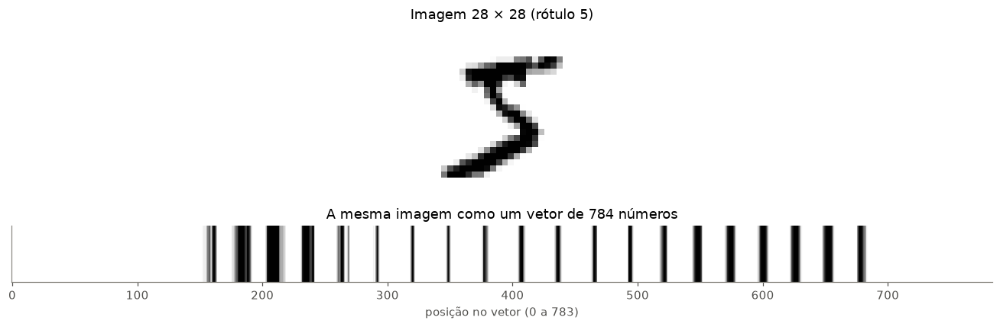
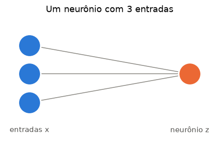
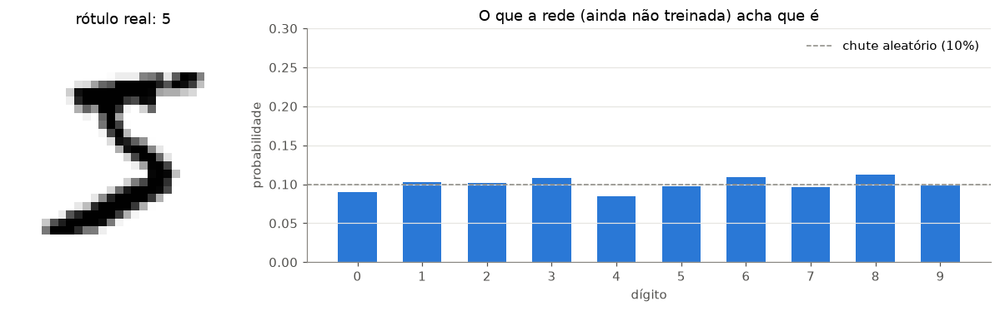
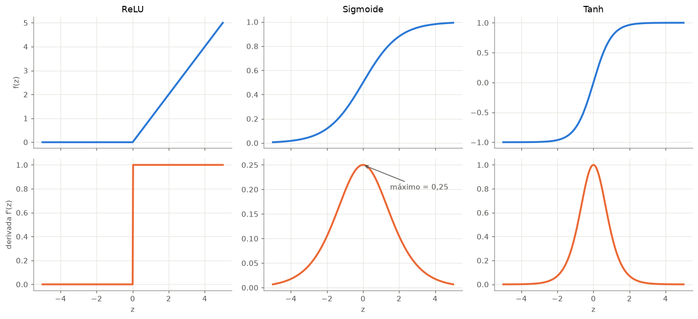
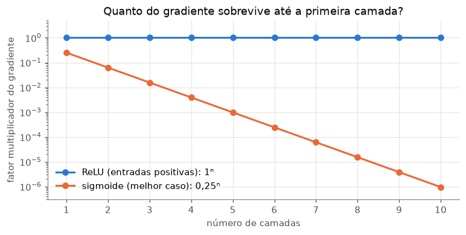
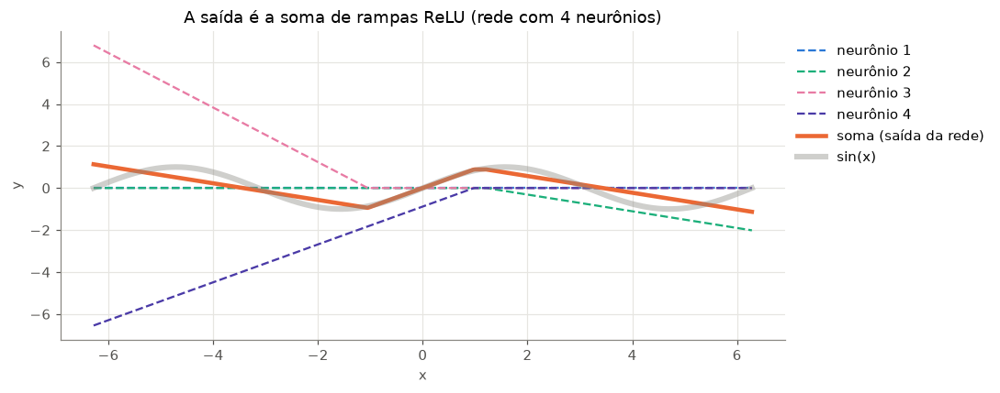

Nesta aula vamos olhar para uma rede neural como ela realmente é: uma função matemática. Sem mistério: somas ponderadas, multiplicações de matrizes e algumas funções não lineares.
Roteiro
O exemplo da semana: imagens de dígitos escritos à mão (MNIST)
O neurônio: soma ponderada + viés
A camada: uma multiplicação de matrizes, \(y = Wx + b\)
Forward pass (passagem para frente) à mão e no PyTorch
Uma rede de verdade aplicada ao MNIST
Por que precisamos de funções de ativação
O Teorema da Aproximação Universal
Este é o primeiro de quatro notebooks do bloco de Deep Learning. Todos usam o MNIST, e cada um parte de onde o anterior parou.
O MNIST é o “Olá, mundo!” do Deep Learning: 60 mil imagens de treino e 10 mil de teste, cada uma com um dígito de 0 a 9 escrito à mão, em tons de cinza, com 28 × 28 pixels. A tarefa é classificar a imagem no dígito correto (10 classes).
O torchvision baixa o dataset na primeira vez (≈ 60 MB) e guarda na pasta data/. transforms.ToTensor() converte cada imagem em um tensor do PyTorch com valores entre 0 e 1.
Code
mnist = datasets.MNIST(root="data", train=True, download=True, transform=transforms.ToTensor() )imagem, rotulo = mnist[0]print(f"{len(mnist)} imagens de treino")print(f"formato de uma imagem: {tuple(imagem.shape)} (canal, altura, largura)")print(f"valores entre {imagem.min():.0f} e {imagem.max():.0f}; rótulo = {rotulo}")
60000 imagens de treino
formato de uma imagem: (1, 28, 28) (canal, altura, largura)
valores entre 0 e 1; rótulo = 5
Uma imagem nada mais é do que apenas uma sequencia de números
A rede que vamos construir (um MLP, Multi-Layer Perceptron) recebe um vetor. Por isso “achatamos” a imagem: as 28 linhas de 28 pixels viram um vetor de 784 números. Isso é exatamente o que faz a camada nn.Flatten().
Code
imagem.flatten().unsqueeze(0).shape
torch.Size([1, 784])
Code
vetor = nn.Flatten()(imagem.unsqueeze(0)) # pyTorch espera um batch de imagensprint(f"{tuple(imagem.shape)} > {tuple(vetor.shape)}")fig, axes = plt.subplots(2, 1, figsize=(12, 4), height_ratios=[3, 1])axes[0].imshow(imagem[0], cmap="gray_r")axes[0].set_title(f"Imagem 28 × 28 (rótulo {rotulo})")axes[0].axis("off")axes[1].imshow(vetor, cmap="gray_r", aspect="auto")axes[1].set(yticks=[], xlabel="posição no vetor (0 a 783)", title="A mesma imagem como um vetor de 784 números")axes[1].grid(False)plt.tight_layout()plt.show()
(1, 28, 28) > (1, 784)

Neurônio
O neuronio pode ser visto como uma soma ponderada entre os pesos e o viés. Como vimos em nossa aula teórica.
Um neurônio artificial recebe entradas \(x_1, x_2, \dots, x_n\), multiplica cada uma por um peso\(w_i\), soma tudo e adiciona um viés (bias) \(b\):
Os pesos dizem o quanto cada entrada importa (e se ela empurra o resultado para cima ou para baixo). O viés desloca o resultado. Pesos e viés são os parâmetros que a rede vai aprender.
Code
def desenha_rede(camadas, ax, rotulos=None, titulo=""):"""Desenha uma rede totalmente conectada: camadas = nº de neurônios por camada.""" xs = np.linspace(0, 1, len(camadas)) pos = []for x, n inzip(xs, camadas): ys = np.linspace(0.5-0.15* (n -1), 0.5+0.15* (n -1), n) pos.append([(x, y) for y in ys])for a, b inzip(pos[:-1], pos[1:]):for (x0, y0) in a:for (x1, y1) in b: ax.plot([x0, x1], [y0, y1], color=CINZA, lw=1, zorder=1) cores = [AZUL] + [VERDE] * (len(camadas) -2) + [LARANJA]for camada, cor inzip(pos, cores):for (x, y) in camada: ax.scatter(x, y, s=900, color=cor, zorder=2, edgecolor="white", lw=2)if rotulos:for x, r inzip(xs, rotulos): ax.text(x, -0.05, r, ha="center", va="top", color=TINTA) ax.set(xlim=(-0.15, 1.15), ylim=(-0.2, 1.1), title=titulo) ax.axis("off")fig, ax = plt.subplots(figsize=(5, 3))desenha_rede([3, 1], ax, ["entradas x", "neurônio z"], "Um neurônio com 3 entradas")plt.show()

Code
x = np.array([0.9, 0.3, 0.6]) # 3 entradas (por exemplo, 3 pixels ou 3 features)w = np.array([0.4, -0.6, 0.9]) # 1 peso por entradab =0.1# viésfor i inrange(3):print(f"w{i +1}·x{i +1} = {w[i]:+.1f} × {x[i]:.1f} = {w[i] * x[i]:+.2f}")## a magia acontece aqui! # veja como a multiplicacao é realizada em numpy, atraves do @ (multiplicação matricial)z = w @ x + bprint(f"\nz = soma + b = {(w * x).sum():+.2f}{b:+.1f} = {z:+.2f}")
Uma camada é um grupo de neurônios que recebem as mesmas entradas, cada um com seus próprios pesos. Empilhando os vetores de pesos como linhas de uma matriz \(W\), a camada inteira vira uma única operação:
\[\mathbf{y} = W\mathbf{x} + \mathbf{b}\]
Com 3 entradas e 2 neurônios, \(W\) tem formato \(2 \times 3\) (uma linha por neurônio) e \(\mathbf{b}\) tem 2 valores. É por isso que GPUs são tão boas para Deep Learning: elas são máquinas de multiplicar matrizes.
Code
W = np.array([[0.4, -0.6, 0.9], # pesos do neurônio 1 (o mesmo do exemplo acima) [-0.3, 0.2, 0.5]]) # pesos do neurônio 2b = np.array([0.1, -0.2])y = W @ x + bprint(f"W: {W.shape}, x: {x.shape}, b: {b.shape} → y: {y.shape}")print(f"y = {y}")
No PyTorch, uma camada assim é um nn.Linear(entradas, saídas). Para o MNIST, uma camada de 784 entradas (os pixels) para 128 neurônios tem uma matriz de pesos \(128 \times 784\):
Code
camada = nn.Linear(784, 128)print(f"pesos W: {tuple(camada.weight.shape)} viés b: {tuple(camada.bias.shape)}")print(f"parâmetros: {camada.weight.numel():,} pesos + {camada.bias.numel()} vieses = {sum(p.numel() for p in camada.parameters()):,}")
Empilhando camadas, temos um MLP. O forward pass é simplesmente calcular a saída, camada por camada. Vamos fazer à mão uma rede pequena com 3 entradas, 2 neurônios escondidos e 1 saída:
Repare no passo 2: o segundo neurônio deu um valor negativo e a ReLU o zerou. Para esta entrada, ele simplesmente não contribui para a saída: \(\hat{y} = 1{,}5 \times 0{,}82 - 2{,}0 \times 0 + 0{,}3 = 1{,}53\).
Agora a mesma rede no PyTorch. Copiamos os pesos acima para dentro de dois nn.Linear e conferimos se o resultado é idêntico. Ele precisa ser: o PyTorch não faz nada além dessas contas.
Code
rede = nn.Sequential(nn.Linear(3, 2), nn.ReLU(), nn.Linear(2, 1) )with torch.no_grad(): # o no_grad serve apenas para computar o forward pass rede[0].weight.copy_(torch.tensor(W1)); rede[0].bias.copy_(torch.tensor(b1)) rede[2].weight.copy_(torch.tensor(W2)); rede[2].bias.copy_(torch.tensor(b2))saida_torch = rede(torch.tensor(x, dtype=torch.float32) )print(f"à mão: {y_hat[0]:.6f}")print(f"PyTorch: {saida_torch.item():.6f}")
A mesma ideia, maior: 784 pixels → 128 neurônios escondidos → 10 saídas (uma para cada dígito).
As 10 saídas são chamadas de logits: números quaisquer, positivos ou negativos. Para transformá-los em probabilidades que somam 1, usamos a função softmax:
\[p_k = \frac{e^{z_k}}{\sum_{j=0}^{9} e^{z_j}}\]
Usamos a softmax aqui, ao invés de sigmoid, porque com softmax, a soma da probabilidade de todos os elementos é igual a 1. Com sigmoid, cada elemento possuiria uma probabilidade também entre [0,1] mas sua soma pode vir a ser maior do que 1. Limitando essa de probabilidades a 1, classificamos o resultado de acordo com a maior probabilidade entre os 10 números possíveis de saída [0,9]
O dígito previsto é o de maior probabilidade.
Code
modelo = nn.Sequential( nn.Flatten(), # (lote, 1, 28, 28) para (lote, 784) nn.Linear(784, 128), # camada escondida nn.ReLU(), # ativação nn.Linear(128, 10), # camada de saída: 10 logits)print(modelo)print(f"\nTotal de parâmetros: {sum(p.numel() for p in modelo.parameters()):,}")
Sequential(
(0): Flatten(start_dim=1, end_dim=-1)
(1): Linear(in_features=784, out_features=128, bias=True)
(2): ReLU()
(3): Linear(in_features=128, out_features=10, bias=True)
)
Total de parâmetros: 101,770
Code
# um lote (batch) com as 8 primeiras imagenslote = torch.stack([mnist[i][0] for i inrange(8)])rotulos = torch.tensor([mnist[i][1] for i inrange(8)])logits = modelo(lote)probs = torch.softmax(logits, dim=1)print(f"entrada: {tuple(lote.shape)} p/ logits: {tuple(logits.shape)}")print(f"soma das probabilidades da 1ª imagem: {probs[0].sum():.3f}")print(f"Probabilidade de cada dígito para as 8 entradas:{probs}")print(f"rótulos reais: {rotulos.tolist()}")print(f"dígitos previstos: {probs.argmax(dim=1).tolist()}")
fig, axes = plt.subplots(1, 2, figsize=(11, 3.5), width_ratios=[1, 3])axes[0].imshow(lote[0, 0], cmap="gray_r")axes[0].set_title(f"rótulo real: {rotulos[0].item()}")axes[0].axis("off")axes[1].bar(range(10), probs[0].detach(), color=AZUL, width=0.6)axes[1].axhline(0.1, color=CINZA, ls="--", lw=1, label="chute aleatório (10%)")axes[1].set(xticks=range(10), xlabel="dígito", ylabel="probabilidade", ylim=(0, 0.3), title="O que a rede (ainda não treinada) acha que é")axes[1].legend(frameon=False)axes[1].grid(axis="x", visible=False)plt.tight_layout()plt.show()

Com os pesos ainda aleatórios, a rede dá ~10% para cada dígito: ela é uma função bem definida, mas inútil. Ensinar a rede a ajustar esses 101.770 parâmetros é o assunto da próxima aula.
Por que precisamos de funções de ativação?
E se tirássemos a ReLU? Duas camadas lineares seguidas são:
Ou seja, colapsam em uma única camada linear. Não importa quantas camadas lineares você empilhe: o resultado é sempre equivalente a uma só, e uma camada linear só desenha fronteiras retilíneas. Conferindo:
W' tem formato (10, 784): uma única camada 784 p/ 10
Duas camadas sem ativação == uma camada? True
A função de ativação quebra essa linearidade. Entre cada camada, ela permite a não-linearidade do espaço, e é isso que permite à rede aprender relações complexas. As mais comuns:
Função
Fórmula
Saída
Uso
ReLU
\(\max(0, z)\)
\([0, \infty)\)
padrão nas camadas escondidas: simples e rápida
Sigmoide
\(\frac{1}{1 + e^{-z}}\)
\((0, 1)\)
saída de classificação binária (probabilidade)
Tanh
\(\frac{e^{z} - e^{-z}}{e^{z} + e^{-z}}\)
\((-1, 1)\)
como a sigmoide, mas centrada no zero
Abaixo, as funções e suas derivadas (inclinações). As derivadas vão ser essenciais na próxima aula, porque é por elas que a rede aprende. Aqui usamos o próprio PyTorch para calculá-las (backward(), que veremos em detalhe na aula 2).
Code
z = torch.linspace(-5, 5, 401, requires_grad=True)ativacoes = {"ReLU": torch.relu, "Sigmoide": torch.sigmoid, "Tanh": torch.tanh}fig, axes = plt.subplots(2, 3, figsize=(13, 6), sharex=True)for j, (nome, f) inenumerate(ativacoes.items()): z.grad =None saida = f(z) saida.sum().backward() # derivada de cada ponto em relação a z axes[0, j].plot(z.detach(), saida.detach(), color=AZUL, lw=2.5) axes[0, j].set_title(nome) axes[1, j].plot(z.detach(), z.grad, color=LARANJA, lw=2.5) axes[1, j].set_xlabel("z")axes[0, 0].set_ylabel("f(z)")axes[1, 0].set_ylabel("derivada f'(z)")axes[1, 1].annotate("máximo = 0,25", xy=(0, 0.25), xytext=(1.5, 0.2), color=TINTA, arrowprops={"arrowstyle": "->", "color": TINTA})plt.tight_layout()plt.show()

Um aviso para o futuro: o gradiente que desaparece
Repare que a derivada da sigmoide é no máximo 0,25. Na próxima aula veremos que, para treinar, as derivadas de cada camada são multiplicadas umas pelas outras (regra da cadeia). Com 10 camadas de sigmoide, o sinal que chega às primeiras camadas pode ser multiplicado por até \(0{,}25^{10}\), menos de um milionésimo. As primeiras camadas praticamente param de aprender: é o problema do gradiente que desaparece (vanishing gradient). A derivada da ReLU é 1 para entradas positivas, por isso ela virou o padrão.
Code
camadas = np.arange(1, 11)fig, ax = plt.subplots(figsize=(8, 3.5))ax.plot(camadas, np.ones(len(camadas)), color=AZUL, lw=2, marker="o", label="ReLU (entradas positivas): 1ⁿ")ax.plot(camadas, 0.25** camadas, color=LARANJA, lw=2, marker="o", label="sigmoide (melhor caso): 0,25ⁿ")ax.set(yscale="log", xlabel="número de camadas", ylabel="fator multiplicador do gradiente", xticks=camadas, ylim=(3e-7, 5), title="Quanto do gradiente sobrevive até a primeira camada?")ax.legend(frameon=False, loc="lower left")plt.show()

O Teorema da Aproximação Universal
Uma rede com uma única camada escondida e uma ativação não linear consegue aproximar qualquer função contínua (em um intervalo limitado) tão bem quanto se queira, desde que tenha neurônios suficientes.
Não vamos demonstrar o teorema mas sim ver ele funcionando. Ajustamos \(\sin(x)\) com redes \(1 \to n \to 1\) com ReLU, para \(n\) = 2, 4, 16 e 128 neurônios.
Cada neurônio ReLU contribui com uma dobra (um pedaço de reta). Com poucos neurônios a aproximação é grosseira, contudo com muitos neuronios, as dobras ficam tão pequenas que a curva parece suave.
Como a rede encontra os pesos certos (o treina abaixo) é o assunto das aulas 2 e 3. Por enquanto, trate como uma caixa-preta.
A saída da rede é a soma das contribuições de cada neurônio escondido: \(\hat{y} = \sum_i w_{2,i} \cdot \text{ReLU}(w_{1,i}\,x + b_{1,i}) + b_2\). Cada termo é uma “rampa” que começa em um ponto diferente. Olhando a rede de 4 neurônios:
Code
rede4 = redes_sen[4]with torch.no_grad(): h = torch.relu(rede4[0](x_sen)) # (400, 4): saída de cada neurônio escondido contribuicoes = h * rede4[2].weight[0] # cada neurônio multiplicado pelo seu peso de saída soma = contribuicoes.sum(dim=1) + rede4[2].biasfig, ax = plt.subplots(figsize=(10, 4))cores = [AZUL, VERDE, "#e87ba4", "#4a3aa7"]for i inrange(4): ax.plot(x_sen, contribuicoes[:, i], color=cores[i], lw=1.5, ls="--", label=f"neurônio {i +1}")ax.plot(x_sen, soma, color=LARANJA, lw=3, label="soma (saída da rede)")ax.plot(x_sen, y_sen, color=CINZA, lw=4, alpha=0.4, label="sin(x)")ax.set(xlabel="x", ylabel="y", title="A saída é a soma de rampas ReLU (rede com 4 neurônios)")ax.legend(frameon=False, loc="upper left", bbox_to_anchor=(1, 1))plt.tight_layout()plt.show()mortos = [i +1for i inrange(4) if h[:, i].max() ==0]print(f"Neurônios que nunca ativam neste intervalo: {mortos if mortos else'nenhum'}")

Neurônios que nunca ativam neste intervalo: [1]
Cada neurônio ativo contribui com uma rampa que liga em um ponto diferente de \(x\), e a soma das rampas desenha a curva. Se algum neurônio ficou zerado em todo o intervalo, ele é um neurônio morto (dead ReLU): a entrada dele é sempre negativa, a ReLU sempre devolve zero e ele não ajuda em nada. Por isso a rede de 2 neurônios acima consegue fazer só uma dobra. Neurônios mortos são um efeito colateral comum da ReLU; ter neurônios de sobra ajuda.
O grande porém
O teorema garante que existe um conjunto de pesos que aproxima a função. Ele não diz:
quantos neurônios são necessários (pode ser um número enorme);
como encontrar esses pesos;
se a rede vai funcionar bem em dados que ela nunca viu.
Essa distância entre “existe uma solução” e “conseguimos encontrá-la” é exatamente o que motiva o treinamento, o tema da próxima aula.
8. Discussão
Uma rede neural é uma função: entradas → multiplicações de matrizes + ativações → saídas.
Um neurônio é uma soma ponderada mais um viés; uma camada é \(W\mathbf{x} + \mathbf{b}\); um MLP são camadas empilhadas com ativações entre elas.
Sem ativações, qualquer número de camadas colapsa em uma só. As ativações dão o poder não linear.
A ReLU é o padrão nas camadas escondidas; a sigmoide sofre de gradiente que desaparece em redes profundas.
Com neurônios suficientes, uma camada escondida aproxima qualquer função contínua, mas achar os pesos é outra história.
Exercícios
Mude os pesos W1 da seção 4 para que os dois neurônios escondidos fiquem negativos antes da ReLU. Qual é a saída da rede? Por quê?
Troque nn.ReLU() por nn.Tanh() nas redes que aproximam \(\sin(x)\). As curvas ficam diferentes?
Aproxime outra função, como \(|x|\) ou \(x^2\), com 4 neurônios. Quantas “dobras” você precisa para \(|x|\)?
Quantos parâmetros tem um MLP 784 → 256 → 128 → 10? Confira sua conta com sum(p.numel() for p in modelo.parameters()).